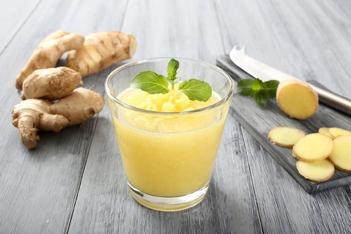

Malian Ginger Juice Recipe

A popular and refreshing ginger drink recipe from West Africa. If it's too spicy, dilute with water. All ingredients can be
adjusted to taste. This drink is great for cutting the heaviness of fried foods. Enjoy!
Ginger juice is a juice consumed in several West African countries, including Nigeria, Benin, Ivory Coast, Guinea and Senegal.
The word has a Dyula origin, the vernacular language of West African traders.This juice is prepared from the rhizomes of ginger.
Lemon is traditionally added. The gnamankoudji recipe can be mixed with other ingredients. Some add lime for an extra touch of
acidity. Others prefer to flavor their juice with a few mint leaves, vanilla sugar, pineapple juice or Guinea sorrel (bissap).
Ingredients
- ⅓ pound fresh unpeeled ginger root, cut into 1/2-inch chunks
- 1 ½ cups water, or as needed to cover
- 4 large lemons, juiced
- 1 cup white sugar
- 7 cups water, or as needed
- 16 leaves fresh mint, crushed
Steps
- Place ginger into a blender, cover with 1 1/2 cups water, and blend until ginger is thick and pasty. Strain and squeeze juice from
ginger pulp into a 2-quart pitcher, squeezing ginger mixture as dry as possible
- Stir lemon juice and sugar into ginger juice until sugar has dissolved. Pour 7 cups water into mixture, stir to combine, and serve
garnished with crushed mint leaves.
Return to top
Return to home page